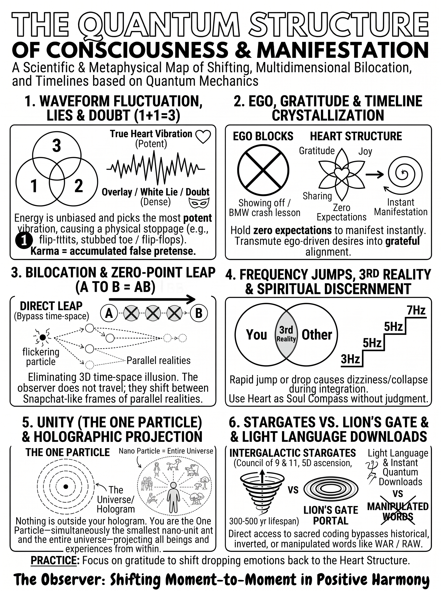
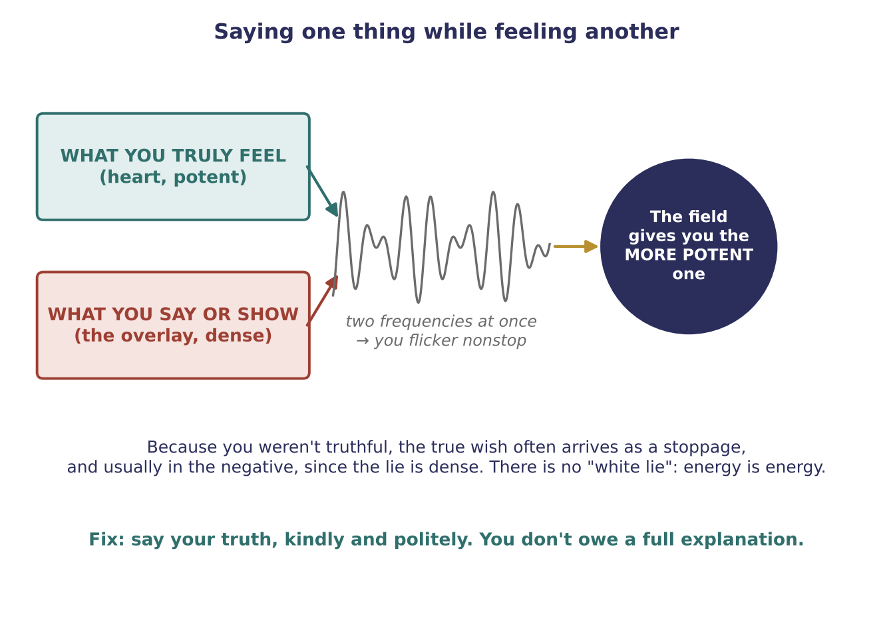
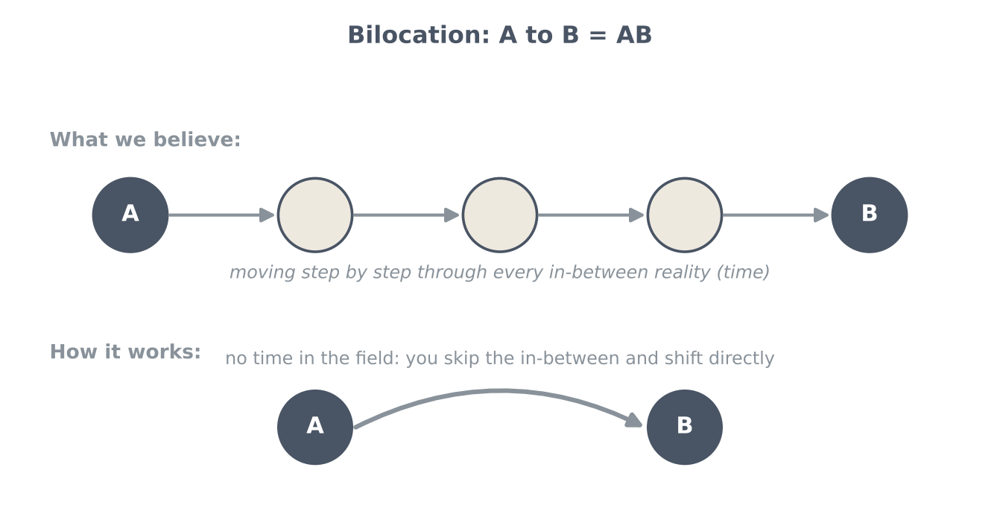
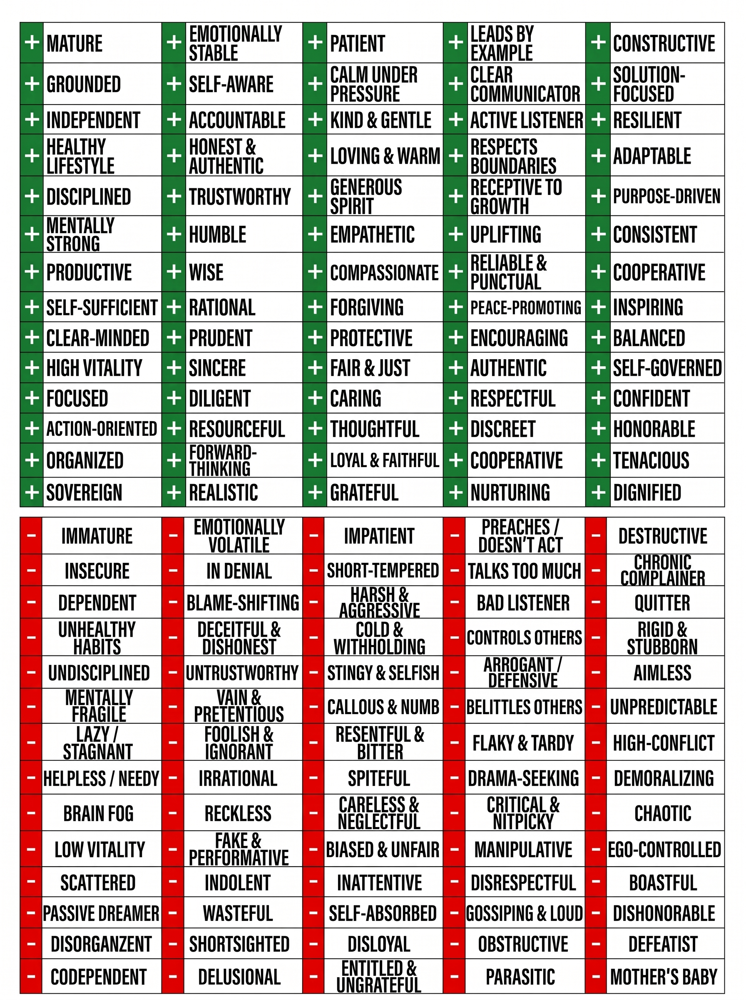

Fluctuating Realities
Truth versus overlay, bilocation, your heart as compass, and words as frequency

Key teachings
The talk opens by saying the knowledge has to sink in and crystallize through repeated listening. Once you know the mechanics, you can pull out in a real situation, remember you are a hologram, and redirect your emotions and deeds. Knowing how to create and redirect is what makes you a master.
3.1Two frequencies at once: the overlay
The teaching example: someone doesn't want to go out with a friend, but to be polite says, "Yes, I'm so excited!" Then they spend the next half hour wishing they had stayed home. Within minutes they hurt a foot badly enough that they nearly can't go.
The explanation of what happened: What you truly feel is your real, heart-level frequency, and it is potent. What you say on top of it is an overlay: another layer of emotion and reality that isn't your true self, "like a lie". Now you are sending two frequencies at the same time, so you flicker like a waveform between two realities, through endless probabilities.
The field then picks the more potent one, and that is always what you truly feel. It searched through all the probabilities for a way to keep them home. Energy is unbiased: it goes where you sent it, but you don't know the route. It could have been their own injury, or something happening to the friend. And because the overlay is a lie, the frequency is dense, so the result usually comes as a negative stoppage.

3.2There is no white lie
"There is no white lie or a bad lie. Frequency is frequency." Small or big, the energy goes somewhere, usually into the negative, because it isn't your true self. It is the same mechanism as doubt (see 2.3): two frequencies, flickering, and the more potent one wins.
This is how negative energy builds up. Karma is defined as accumulated false pretense: the build-up of everything you said or did that wasn't your true vibration.
Being truthful doesn't mean over-explaining. You can say, kindly: "I'm sorry, something came up. Can we do it another time?" People usually understand. You don't owe anyone the private details, and you should respect other people's privacy in the same way.
3.3You are always fluctuating — so fluctuate in the positive
You shift through endless realities all the time, so no one can map your exact path, not even you. The aim is to stay positive most of the time, which eventually becomes all the time as it crystallizes. Through joy, giving and sharing from the heart, each next hologram is built on the positive.
When you project positive from your true heart, know the outcome is positive. What you can't know is how or when; your 3D brain can't calculate infinite probabilities (see 1.5). When your emotion drops, switch it with gratitude for everything you have, and keep shifting. With mastery and no ego, manifestation can become instant.
3.4Ego is an overlay too
Wanting something to show off, or wanting more when you already have enough, is also an overlay: greed and manipulation sit on top of your true self. The teaching example is acting out of anger and wanting to be admired for a car; a serious accident followed quickly, with the question, "Does it matter what type of car you're driving?" Lesson: things are not who you are; seeking recognition through them is false pretense. Once you learn this, consequences arrive much faster.
So keep peeling the layers (see 2.9): Was that truly what I felt? Did I do it from ego, or to make people think well of me so I'd feel better? When you find the true vibration, switch to it and hold it with your emotions and deeds. The better you master this, the faster outcomes come, because there is no time.
The same applies to money (see 1.7): keep giving and sharing, and one day you'll need something and find it in front of you.
3.5Bilocation: A to B = AB
Measured against the motion of the Earth, the solar system and the universe, you are not moving at all: you are shifting like snapshots (see 1.2). Since the field has no time, you don't have to pass through every in-between reality. You can skip them and land directly in another: A to B is AB. That is bilocation, cutting through time-space at zero point. We can all do it; it is the goal.
If it happens to you unexpectedly, for example ending up somewhere far from where you were driving, the advice is not to be scared. Let the explanation sink in, and work towards doing it knowingly. The way to learn it is through the structure, in order: quantum manifestation (Section 1), mobilizing structures (Section 2), the third reality you create with others, truth and deception (this section), then bilocation.

3.6Your heart is the compass — without judgment
Everyone speaks their truth from their own timeline, and between you and another person you create a third reality (see 2.2). So don't judge someone who truly believes they're right; even people doing harmful things act from their belief system and conditioning. (The example: we eat animals and consider them lower; what if a higher consciousness saw us the same way?)
But do peel the layers: is this person speaking from the heart, or deceiving? If it isn't from the heart, ask "What can I do to make the situation better?" You don't have to join that kind of consciousness. Give love and light and stay in the heart. Negative can't withstand positive; positive always overrides density eventually, because consciousness must exist (see 2.8).
The same applies to teachers and channels, including this one. Stay with whatever resonates with your heart. If something doesn't, perhaps it isn't your time for it, and that's fine. But don't keep supporting a big name out of false pretense once you sense, or discover, greed and manipulation. Being untruthful with yourself makes you fluctuate too.
3.7Big frequency jumps — and checking your body
Shifting very quickly to a much higher frequency ("3 to 7" is only an example) can be too big a jump for the body, causing dizziness, nausea or even fainting. Reading can trigger it, because every word is a frequency: reading too far ahead, against guidance, can bring on nausea. The Harmonic Reactor book is said to carry fifth-dimensional frequency for this reason. This is integration, and it is normal.
But it is made clear that it can also be a drop in frequency, or a sign that you are not healthy: "maybe the sugar ended up dropping down." So if it happens, check what is going on with your body.
3.8Heart connection versus lust
When intimacy with a partner comes from the heart, it reaches a level of connection free of false pretense, and that energy is directed into a different timeline. Practices such as tantra are a permission slip (see 1.6, Q10). Once you know the vibration of loving ecstasy, you can recall it and hold it in everyday life without a ritual; you can't think of something whose vibration you don't already know (see 1.4).
Lust is not the heart structure. Content that pulls emotion into lust leads to a different timeline, and turning intimacy into a constant ritual can pull you away from what matters, even into addiction.
3.9Words, light language and downloads
Words are frequencies and mantras. Many words carry hidden meanings: read "war" backwards and it is "raw", and consciousness takes in both. So speak from the heart, with positive words and positive intention.
Light language, such as unfamiliar script arriving through automatic writing, is coding made for your own consciousness, or sometimes the language of your galactic family. Accept it as it is; your consciousness crystallizes and transforms it, often as an activation. Ancient tablets are said to carry light language that can activate people who look at them.
Information can also arrive as a download: a whole book's worth at once, which you then explain step by step. Everyone can do this, because you are consciousness and all the information is there. Like the "genius" child who simply knows the answer, you don't always need the working-out. Don't put conditions on it.
3.10Stargates, not the Lion's Gate
The guidance behind these teachings (the Council of Nine and the 11-dimensional beings) is not working with portals such as the Lion's Gate, which belong to a different timeline sequence for those whose agreements lead there. They work with stargates: portals for ascension through intergalactic timelines. This is said to extend life beyond the 3D norm, "80 years may turn into 300 or 500," through connection with your galactic family. Those involved are predetermined by timelines and agreements.
The method — the Truth Check
Use it before you answer, agree, buy or act, and whenever something you said doesn't sit right:
- Pause and feel. What do I truly feel about this, underneath politeness or habit?
- Peel the layers. Is this from my heart, or from ego, fear of disappointing, wanting to impress, or greed?
- Say your truth kindly. Brief and polite ("Something came up, can we do it another time?"). No full explanation needed.
- If you already overlaid it (said yes, meant no), catch it and correct it honestly before the two frequencies play out.
- If your emotion drops, switch it with gratitude for what you have (see 3.3).
- Project the positive from the heart and let go of when, where, who and how.
Questions answered
Isn't this the same explanation as when we doubt?
So it's important to live in our own truth, let others live in theirs, and listen to our hearts?
If I keep fluctuating and creating new timelines, does anyone know where I'm going, except my heart?
My daughter turned at a stop sign near her home and found herself on the other side of the city. Did she go to another reality? How can we do this consciously?
Is everyone telling me their own version of the truth? Is my heart my compass?
I'm bombarded with videos and channels, each with their own truth. How do I know what to believe?
I collapsed on the bathroom floor, and my heart says I shifted to a higher density. Why?
Is human evolution organic, for example through tantra and a strong sensual connection?
What about the Lion's Gate portal?
When I sit with pen and paper, I write in a cursive script that nobody can read. What is it?
